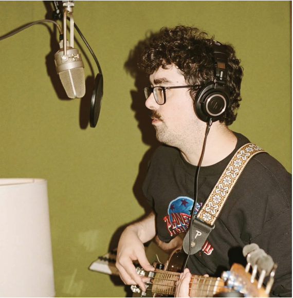
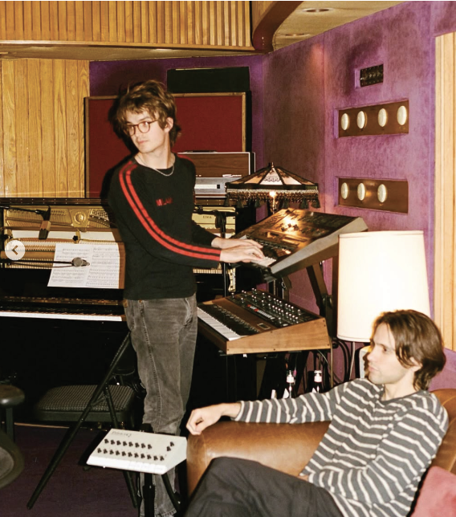

The Crux is the third studio album by the American actor and musician Joe Keery, under his alias Djo. It was released independently under AWAL on April 4, 2025, and served as the follow-up to his previous album, Decide (2022). Keery co-produced The Crux with his frequent collaborator Adam Thein at Electric Lady Studios in New York City. Three singles—"Basic Being Basic", "Delete Ya", and "Potion"—preceded the album. To promote The Crux, Keery embarked on the Back on You World Tour between February and June 2025.
Listen Now!DJO
New Album Out Now! - The Crux

Background
Joe Keery saw breakthrough success in his musical career, under the alias Djo, with the song "End of Beginning" (2024). One of the singles from his second studio album, Decide (2022), it was the sixth song with the most streams in 2024 and charted in 41 countries, including in the United States with a peak at number 11. It also received certifications in nearly 20 nations. Keery started teasing his third album on social media at the beginning of 2025.
Production
Keery worked with his frequent collaborator Adam Thein for The Crux. They co-produced the album at Electric Lady Studios in New York City. According to DIY, the lyrical themes center on "a hotel housing guests who are all [...] at crossroads in their life".
Release
On January 24, 2025, Keery announced his third album, The Crux, and revealed its track listing and cover artwork. He also released its lead single, "Basic Being Basic", and performed it on The Tonight Show Starring Jimmy Fallon four days later. The album was supported by a concert tour titled Back on You World Tour between February and June 2025, which passed through North America, Europe, and Australia.